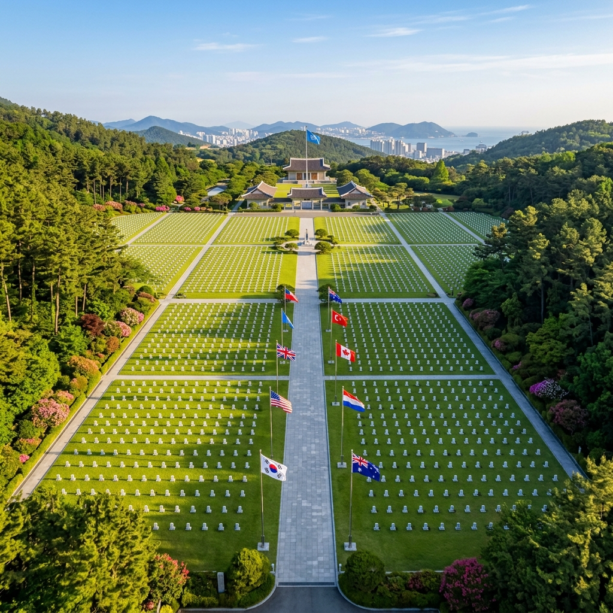
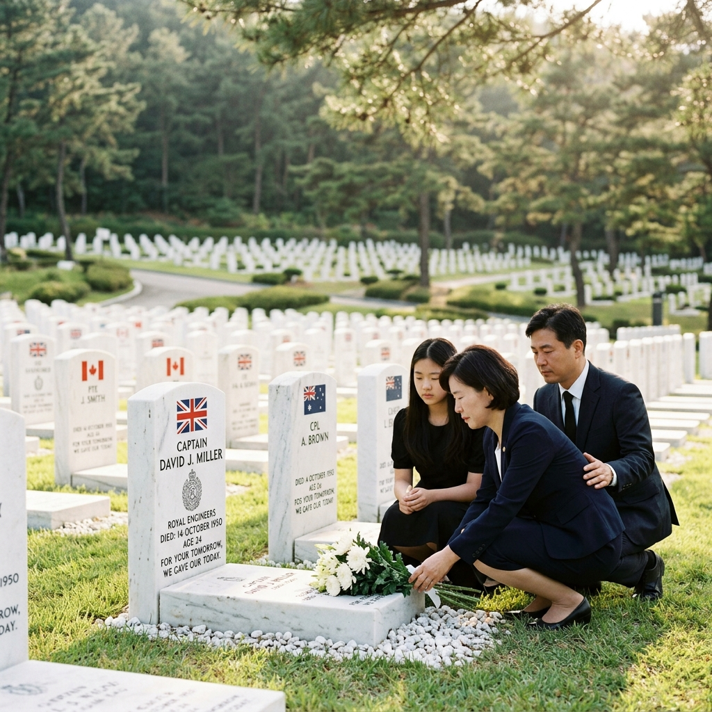
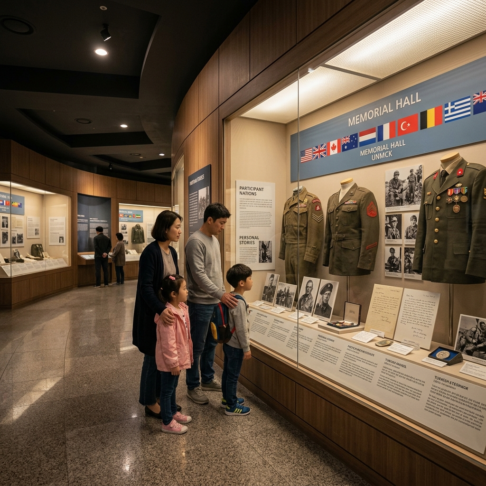

부산 UN기념공원 현충일 2026 — 세계 유일 UN군 안장지 호국 산책과 평화공원 연계 코스
6월 6일 현충일, 어디로 가야 할지 고민이시라면 부산 남구 대연동에 위치한 UN기념공원을 강력히 추천합니다.
이곳은 지구상에서 유일하게 유엔(UN)이 직접 관리하는 묘지이자, 6·25전쟁 당시 대한민국의 자유와 평화를 지키기 위해 이국땅에서 산화한 UN군 장병들이 영원히 잠든 성지입니다. 단순한 관광지가 아니라, 역사가 살아 숨 쉬는 '살아있는 교육 현장'이기도 합니다.
총 11개국 2,300여 위의 유해가 안장되어 있으며, 유네스코 세계문화유산 등재를 추진 중일 만큼 역사적 가치가 세계적으로 인정받고 있습니다. 현충일에는 추념식과 함께 무료 입장이 운영되므로, 온 가족이 역사적 의미를 되새기기에 더할 나위 없는 장소입니다.
🌏 세계에서 단 하나뿐인 UN기념공원, 그 역사적 배경
1950년 6·25전쟁이 발발하자 UN안보리는 즉각 결의문을 채택하고 16개국으로 구성된 UN군을 파견했습니다. 이들은 낯선 땅, 낯선 언어, 낯선 기후 속에서도 조국의 자유를 지키겠다는 일념 하나로 싸웠습니다.
전쟁 기간 중 전사한 UN군 유해를 임시 안장한 곳이 바로 지금의 UN기념공원 부지입니다. 1951년 1월 전쟁 중에 설치된 이 공동묘지는 1959년 대한민국 정부가 영구적으로 유엔에 양여하면서 세계 유일의 UN 직할 묘지가 되었습니다.
현재 이곳에는 영국 885위, 터키 462위, 캐나다 378위, 호주 281위, 네덜란드 117위 등 총 11개국 2,300여 위의 유해가 안장되어 있습니다. 미국, 프랑스, 노르웨이 등 일부 국가는 전후 본국으로 이전했으나, 생전에 직접 이곳에 안장되기를 원한 귀환 참전 용사들이 여전히 새롭게 안장되고 있다는 사실이 이 공간이 지닌 의미를 더욱 깊게 합니다.

부산 UN기념공원 전경 — 세계 유일의 유엔 직할 묘지 / AI 제작 이미지
🗺️ UN기념공원 구역별 완전 해설 — 어디를 어떻게 볼 것인가
공원은 크게 묘역(Cemetery Zone), 추모관(Memorial Hall), 상징 구역(Symbolic Zone) 세 구역으로 나뉩니다. 총 면적은 약 13만 5,000㎡로 넓지 않아 도보로 1~2시간이면 충분히 둘러볼 수 있습니다.
① 묘역(Cemetery Zone)
잔디 위에 가지런히 놓인 흰 비석들은 보는 것만으로도 숙연함을 자아냅니다. 각 비석에는 이름, 계급, 소속 국가, 생몰연도가 새겨져 있으며 일부 비석에는 '알 수 없음(Unknown)'이라고만 기재되어 있어 가슴을 더 먹먹하게 합니다. 국가별로 구획이 나뉘어 있어 영국, 터키, 캐나다, 호주 구역을 순서대로 산책하면 자연스럽게 역사를 배울 수 있습니다.
② 추모관(Memorial Hall)
2001년 개관한 추모관에는 6·25전쟁 당시 UN군 파병 역사, 전쟁의 진행 과정, 그리고 안장자들의 생전 사진과 편지가 전시되어 있습니다. 가족 관람객이라면 아이들과 함께 이 공간을 꼭 둘러보시길 권합니다. "왜 낯선 나라를 위해 싸웠을까?"라는 질문에 대한 답이 이 전시관 안에 있습니다.
③ 상징 구역(Symbolic Zone)
연못과 조각상, 태극기와 UN기가 함께 휘날리는 광장이 조성되어 있습니다. 이 공간에서는 매년 11월 11일 '턴 투워드 부산(Turn Toward Busan)' 행사가 열려 전 세계 참전국 국민들이 부산을 향해 1분간 묵념을 올립니다.
📅 2026년 현충일 행사 일정 및 추념식 안내
6월 6일 현충일에는 공원 내 추념 광장에서 공식 추념식이 거행됩니다. 부산시와 UN기념공원 관리처 공동 주관으로 진행되며, 참전국 대사관 관계자, 지역 보훈 단체, 시민들이 함께 참석합니다.
| 구분 | 내용 |
|---|
| 추념식 시각 | 오전 10시 (현충일 당일) |
| 입장료 | 무료 (연중 무료 개방) |
| 관람 시간 | 하절기(3~10월) 09:00~18:00 / 동절기(11~2월) 09:00~17:00 |
| 주차장 | 공원 내부 주차장 이용 가능 (유료, 현충일 무료 개방 여부 현장 확인 권장) |
| 위치 | 부산광역시 남구 유엔평화로 93 |
| 대중교통 | 지하철 2호선 대연역 3번 출구 도보 10분 |
💡 현충일 꿀팁: 추념식 참석을 원하신다면 오전 9시 30분 이전에 도착하는 것이 좋습니다. 추념식 종료 후에는 각 구역을 자유롭게 관람할 수 있으며, 방명록 서명 코너도 운영됩니다. 복장은 단정한 일상복이면 충분하며, 선글라스를 착용한 채로 비석 앞에 서는 것은 예의에 어긋날 수 있으니 주의하세요.
🏛️ 평화공원 — UN기념공원과 함께 걷는 30분 코스
UN기념공원에서 도보로 약 5분 거리에 부산 평화공원이 있습니다. 2004년 조성된 이 도심 공원은 면적 약 40만㎡에 호수와 분수대, 산책로, 야외 공연장이 갖춰져 있어 현충일 이후 가족과 함께 산책하기에 최적인 공간입니다.
평화공원 내 평화의 문과 시민의 탑은 부산의 평화·번영을 상징하는 랜드마크로, 기념사진을 남기기 좋은 포인트입니다. 호수 주변의 산책로에서는 도심 속 녹음을 즐길 수 있으며, 아이들을 위한 물놀이 광장도 별도로 운영됩니다(하절기 한정).
두 곳을 묶어 '호국 + 힐링' 반나절 코스로 구성하면 오전 UN기념공원 추념식 → 오후 평화공원 산책 → 대연동 맛집 방문의 흐름으로 알차게 하루를 보낼 수 있습니다.

UN기념공원 묘역 — 이국의 젊은이들이 잠든 성지 / AI 제작 이미지
🍽️ 대연동·남구 주변 맛집 & 카페 추천
현충일 방문 후 근처에서 식사를 즐기고 싶다면 대연동 먹자골목을 추천합니다. UN기념공원에서 도보 10분 이내에 위치한 이 일대에는 부산식 돼지국밥, 밀면, 해물탕 등 정통 부산 음식을 저렴하게 즐길 수 있는 식당들이 밀집해 있습니다.
추천 메뉴 및 특징
- 돼지국밥: 부산 국밥은 서울식과 달리 깔끔하고 담백한 육수가 특징입니다. 새우젓으로 간을 맞춰 드시면 현지식이 됩니다.
- 밀면: 부산 6·25 피란민 음식 문화에서 탄생한 밀면은 시원한 육수와 쫄깃한 면발이 일품입니다. 현충일 방문 후 전쟁의 역사와 밀면의 유래를 연결지어 설명하면 아이 교육에도 매우 효과적입니다.
- 카페: UN기념공원 정문 앞 거리에 아담한 카페들이 있어 산책 후 여유롭게 커피 한 잔을 즐길 수 있습니다.
점심 피크 시간(12시~13시 30분)에는 대기가 발생할 수 있으므로, 추념식 참석 전 이른 아침 식사를 마치거나 오후 1시 30분 이후 방문하시길 권합니다.
🚌 교통 & 주차 완벽 가이드
대중교통 이용 시
부산 도시철도 2호선을 이용하시면 대연역(大淵驛)에서 하차한 뒤 3번 출구로 나와 유엔평화로를 따라 도보 10분 이면 공원 정문에 도착합니다. 현충일에는 임시 셔틀버스가 운행될 수 있으니 부산시 교통안내 앱을 사전 확인하시길 권합니다.
자가용 이용 시
내비게이션에 '부산 UN기념공원' 또는 '유엔평화로 93'을 입력하시면 됩니다. 공원 인근에 소규모 주차장이 있으나 현충일에는 방문객이 집중되므로, 주차는 인근 평화공원 주차장을 이용하고 도보로 이동하시는 방법이 현명합니다. 부산 도시고속도로 수영IC 또는 대연IC 이용 시 10분 내외로 도착 가능합니다.
⚠️ 주의: 현충일 당일은 추념식 시간대(오전 9시~11시)에 공원 주변 교통이 통제될 수 있습니다. 대중교통 이용 또는 평화공원 주차 후 도보 이동을 강력히 권장합니다.
📸 인생샷 명당 TOP 3
사진을 좋아하시는 분이라면 다음 세 곳을 놓치지 마세요.
1. 메인 가로수길 (Main Avenue)
공원 입구에서 추모관까지 이어지는 중앙 도로 양쪽으로 도열한 각국 국기와 메타세쿼이아 나무가 인상적인 배경을 만들어 줍니다. 오전 이른 시간에 역광으로 촬영하면 독특한 실루엣 사진을 얻을 수 있습니다.
2. 반사 연못 (Reflection Pond)
상징 구역의 연못은 고요한 수면 위에 하늘과 주변 나무가 그대로 반영되어 유리 같은 반영 사진 촬영이 가능합니다. 바람이 없는 맑은 날 오전 10시 전후가 최적입니다.
3. 각국 국기 광장
11개국 국기가 나란히 펄럭이는 광장은 이 공원만의 독특한 풍경입니다. 망원 렌즈로 국기들의 열을 압축해 촬영하면 굉장히 웅장한 사진을 얻을 수 있습니다.
🧒 아이와 함께하는 역사 교육 포인트
UN기념공원은 단순한 관광지를 넘어, 아이들에게 전쟁의 의미와 평화의 소중함을 생생하게 가르칠 수 있는 최고의 현장 교육 장소입니다.
현장 교육 포인트
- 비석의 나이 읽기: 아이와 함께 비석에 새겨진 생몰연도를 읽어보세요. "이 사람은 20살이었어"라는 한마디가 어떤 교과서보다 깊은 인상을 남깁니다.
- 국가 찾기 게임: "터키 구역은 어디 있을까?", "가장 많은 분들이 안장된 나라는?" 같은 질문으로 아이의 참여를 유도해 보세요.
- 추모관 영상 시청: 추모관 내부에서 상영되는 6·25전쟁 기록영화는 약 15분 분량으로, 아이들의 집중력 내에서 전쟁의 실상을 간접 경험할 수 있습니다.
- 방문록 서명: 아이가 직접 방명록에 서명하면 방문 경험을 오래 기억합니다.

UN기념공원 추모관 내부 — 11개국 참전 역사의 기록 / AI 제작 이미지
🏨 주변 숙박 및 1박 2일 부산 호국 코스 제안
부산에서 1박 2일로 머무르실 계획이라면, UN기념공원을 중심으로 다음 코스를 추천합니다.
[1일차] 호국 테마 코스
UN기념공원 추념식 참석 → 평화공원 산책 → 대연동 밀면 점심 → 부산현대미술관(관람 무료 시간대 확인) → 광안리해수욕장 석양 감상 → 광안리 근처 숙박
[2일차] 부산 전통 코스
용두산공원 부산탑 → 자갈치시장 아침 시장 → 국제시장 문화관광 → 보수동 책방골목 → 영도다리 역사 산책 → 귀가
숙박은 광안리, 해운대, 서면 일대가 교통이 편리합니다. UN기념공원까지 지하철 2호선으로 직접 연결되므로 어디에 묵더라도 이동에 큰 불편은 없습니다. 현충일 전후 주말은 호텔 수요가 늘어나므로 최소 2주 전 예약을 권장합니다.
🌿 연중 방문 시 추천 시즌 및 계절별 볼거리
UN기념공원은 연중 언제든 방문할 수 있지만, 계절마다 다른 분위기를 선사합니다.
봄 (3~5월): 공원 내 벚나무와 철쭉이 개화하여 초록 잔디 위 흰 비석들과 어우러진 이색적인 봄 풍경을 즐길 수 있습니다.
여름 (6~8월): 현충일이 포함된 6월은 방문하기 가장 의미 있는 시기입니다. 더위가 시작되므로 오전 일찍 방문하시길 권합니다.
가을 (9~11월): 공원 내 단풍이 들기 시작하는 10~11월은 사진 명소로 손색없습니다. 특히 11월 11일 '턴 투워드 부산' 행사일에는 전 세계에서 방문객이 몰립니다.
겨울 (12~2월): 관람객이 적어 조용히 산책하며 성찰하기에 좋습니다. 눈이 내린 날의 하얀 비석들은 또 다른 아름다움과 숙연함을 동시에 줍니다.
#부산UN기념공원
#현충일2026
#부산여행
#호국보훈
#UN기념공원현충일
#부산평화공원
#6월여행지추천
#역사여행
#부산가볼만한곳
#한국전쟁역사